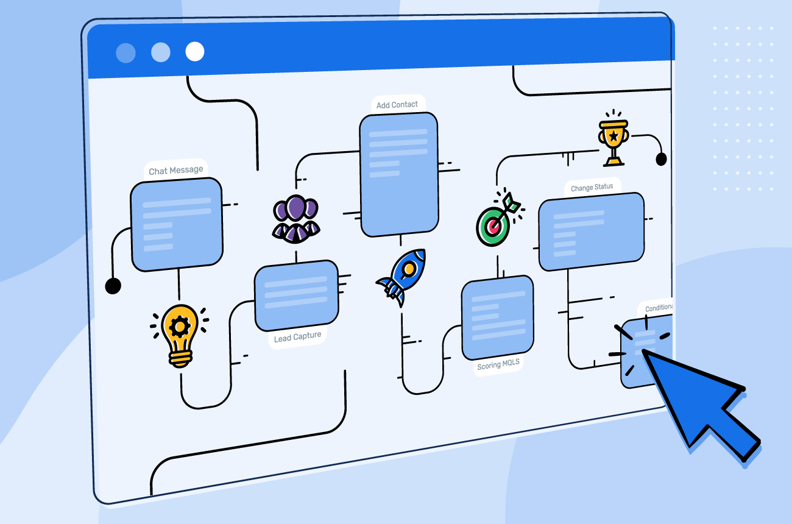

About Me
I'm a results-driven professional with expertise in customer and technical support, specializing in resolving complex issues and delivering exceptionsl customer experiences,with hands-on experience in supporting SaaS tools, troubleshooting API issues, analyzing logs, and helping customers resolve technical challenges.
.png)
In this project, I used PostgreSQL to explore a set of customer support tickets with the goal of identifying patterns in ticket types, priorities, and customer demographics. The database structure allows for efficient querying and analysis, helping simulate real-world tasks like investigating support trends and improving response strategies

Used Make (formerly Integromat) to automate repetitive tasks
across support tools and platforms.
Set up triggers and actions to simulate real-life workflows,
like routing form submissions and sending alerts.
This project highlights how automation can
streamline support processes without code.
FAQ project showcasing my skills in product documentation and knowledge base creation, aimed at enabling customer self-service.
A bug report that demonstrates clear issue documentation, reproducible steps which enhances effective communication with QA, engineering and product teams. To aid in faster resolution and improve cross-team communication